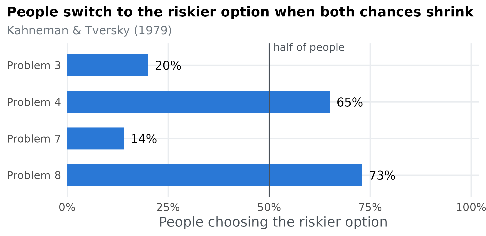
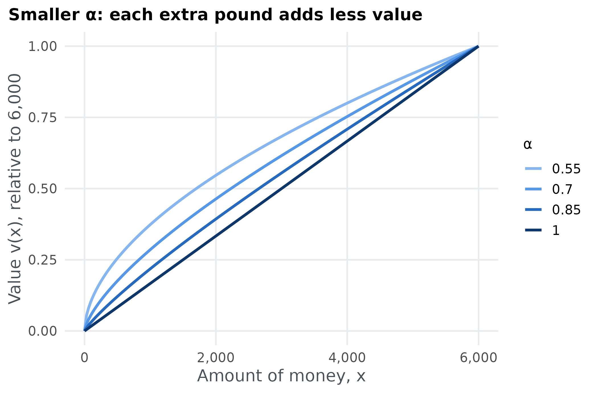
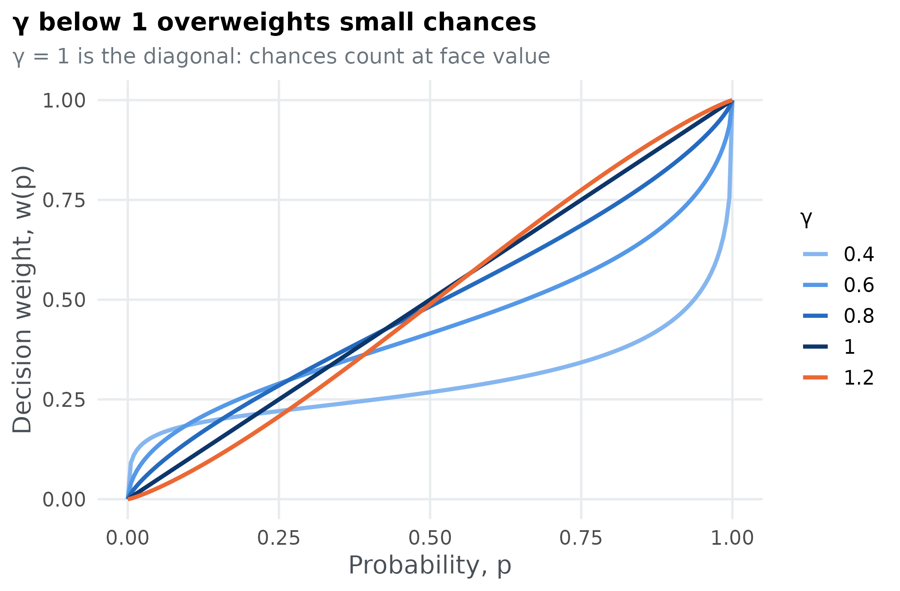
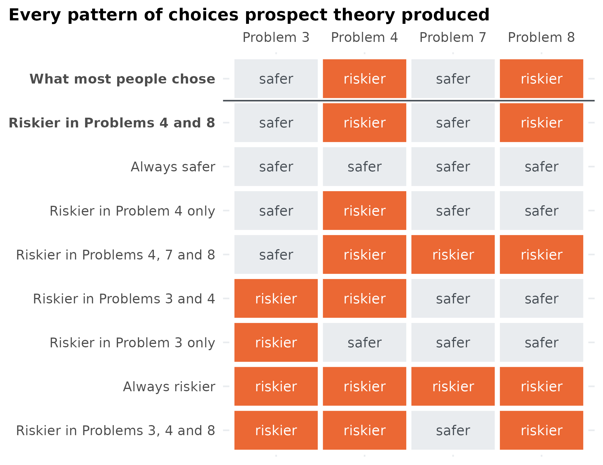
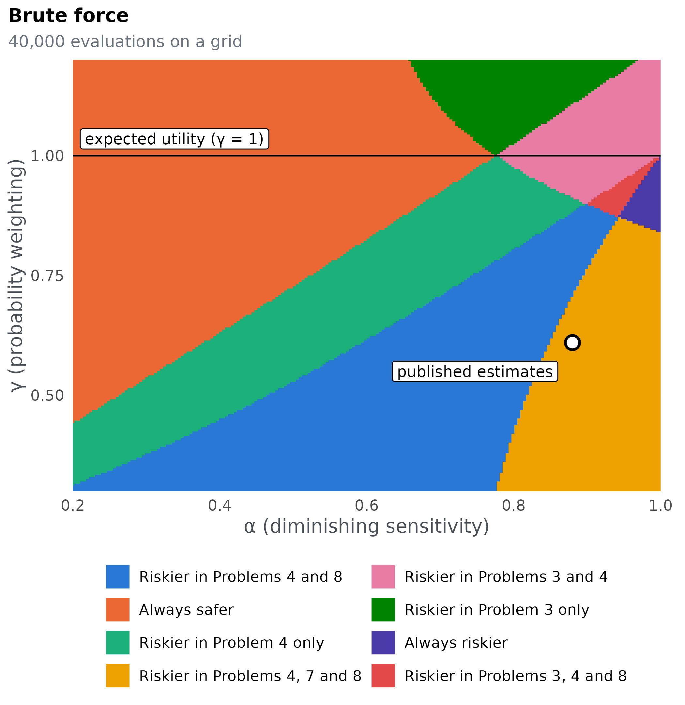
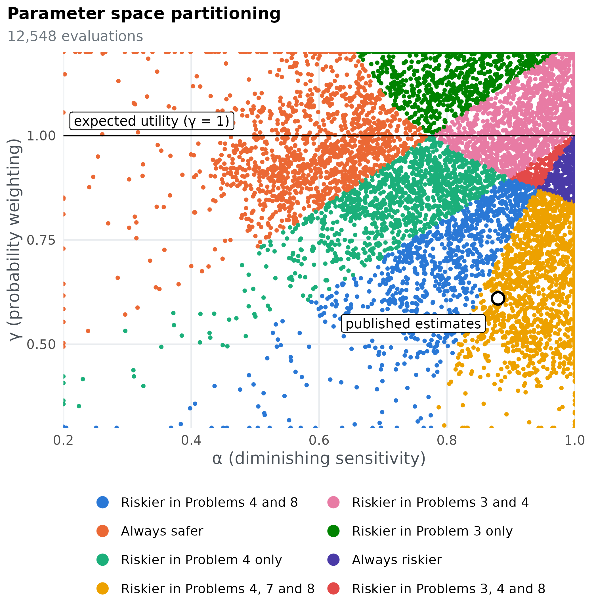
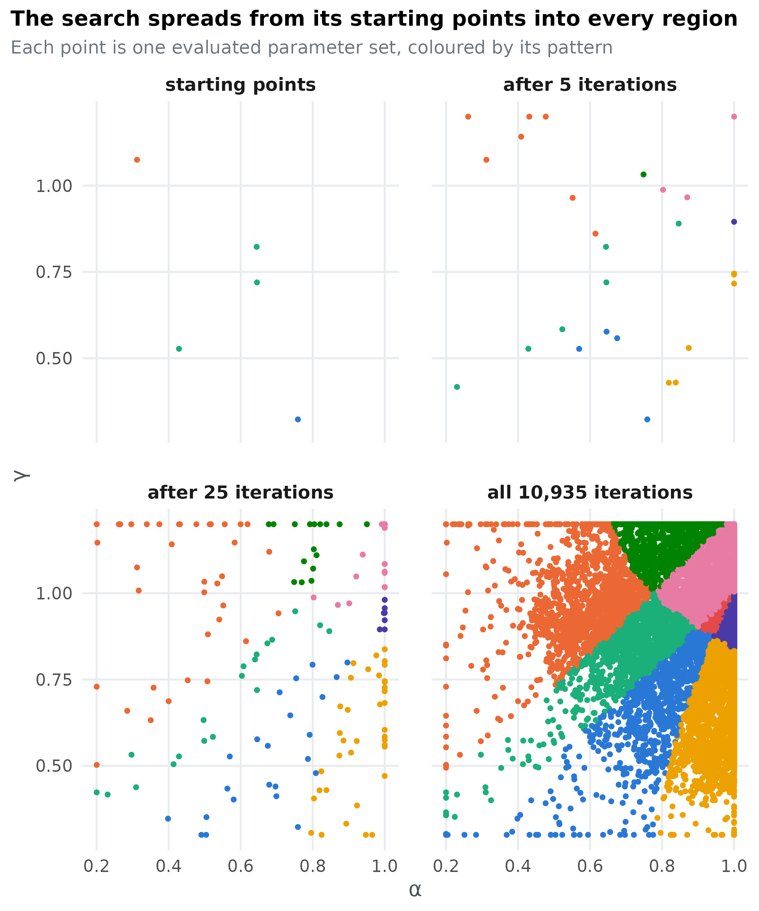
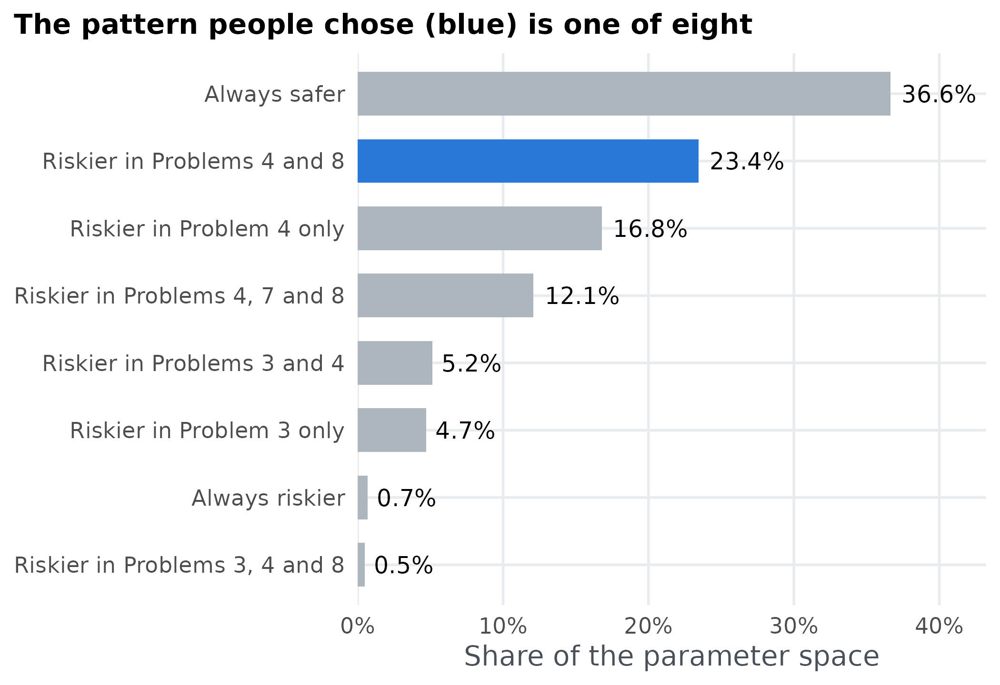

Suppose you have a model of how people choose between bets. You can fit it to data and find the parameter values that describe people best. Parameter space partitioning (PSP) asks a different question: what is the model capable of predicting at all? It searches the model’s parameters for every qualitatively different pattern of behaviour the model can produce (Pitt, Kim, Navarro & Myung, 2006). That tells you two things a fit cannot:
- whether the model can produce the pattern people actually show, and how much of its parameter space does so;
- what else the model can produce. A model that can predict almost any pattern explains little when it happens to predict the right one.
This tutorial works through one complete analysis with psp: prospect theory, a famous model of risky choice, and four bets from the paper that introduced it.
Four bets
Kahneman and Tversky (1979) asked people to choose between pairs of bets. In each pair, one option is riskier: it pays more but is less likely to pay out. The other is safer.
problems <- data.frame(
problem = c(3, 4, 7, 8),
risky_amount = c(4000, 4000, 6000, 6000),
risky_chance = c(0.80, 0.20, 0.45, 0.001),
safe_amount = c(3000, 3000, 3000, 3000),
safe_chance = c(1, 0.25, 0.90, 0.002),
chose_risky = c(20, 65, 14, 73), # percentage of people
people = c(95, 95, 66, 66)
)| Problem | Riskier option | Safer option | People |
|---|---|---|---|
| 3 | 80% chance of 4,000 | 3,000 for sure | 95 |
| 4 | 20% chance of 4,000 | 25% chance of 3,000 | 95 |
| 7 | 45% chance of 6,000 | 90% chance of 3,000 | 66 |
| 8 | 0.1% chance of 6,000 | 0.2% chance of 3,000 | 66 |
The problems come in two matched pairs. Problem 4 is Problem 3 with both chances divided by four, and Problem 8 is Problem 7 with both chances divided by 450. Here is what people chose:
problems$label <- factor(paste("Problem", problems$problem),
levels = rev(paste("Problem", problems$problem)))
ggplot(problems, aes(chose_risky, label)) +
geom_col(width = 0.6, fill = blue) +
geom_vline(xintercept = 50, colour = "#495057", linewidth = 0.4) +
geom_text(aes(label = paste0(chose_risky, "%")), hjust = -0.25, size = 4.4) +
annotate("text", x = 51, y = 4.5, label = "half of people", hjust = 0, size = 3.8, colour = "#495057") +
scale_x_continuous(limits = c(0, 100), breaks = seq(0, 100, 25), labels = function(x) paste0(x, "%"),
expand = expansion(mult = c(0, 0.02))) +
labs(x = "People choosing the riskier option", y = NULL,
title = "People switch to the riskier option when both chances shrink",
subtitle = "Kahneman & Tversky (1979)")
Most people take the safer option in Problems 3 and 7, but the riskier option in Problems 4 and 8. This switch is a problem for expected utility theory, the classical account of rational choice. Dividing both chances by the same number should never change which option you prefer, yet it does here. Can prospect theory produce this pattern of choices, and what else can it produce?
The model
Prospects
Each option is a prospect: an amount of money x won with probability p, and nothing otherwise. A sure thing is a prospect with p = 1. Prospect theory gives every prospect a subjective value
V(x, p) = w(p)\, v(x),
the product of how much the money is worth to the person, v(x), and how much weight they give its chance of happening, w(p). Each of these has one free parameter.
How much money is worth: \alpha
v(x) = x^{\alpha}, \qquad 0 < \alpha \le 1.
The parameter \alpha (alpha) controls diminishing sensitivity. With \alpha = 1, value is proportional to money: 6,000 is worth exactly twice 3,000. The smaller \alpha, the less each extra pound adds, so a sure 3,000 starts to look nearly as good as a chance of 4,000.
alphas <- c(1, 0.85, 0.7, 0.55)
curves <- expand.grid(x = seq(0, 6000, length.out = 201), alpha = alphas)
curves$v <- curves$x^curves$alpha / 6000^curves$alpha # scaled so all curves end at 1
ggplot(curves, aes(x, v, group = alpha, colour = factor(alpha))) +
geom_line(linewidth = 1.1) +
scale_colour_manual(values = c("1" = "#0d366b", "0.85" = "#256abf", "0.7" = "#5598e7", "0.55" = "#86b6ef"),
breaks = c("0.55", "0.7", "0.85", "1"), name = "α") +
scale_x_continuous(labels = scales::label_comma()) +
labs(x = "Amount of money, x", y = "Value v(x), relative to 6,000",
title = "Smaller α: each extra pound adds less value")
How much a chance counts: \gamma
w(p) = \frac{p^{\gamma}}{\left(p^{\gamma} + (1 - p)^{\gamma}\right)^{1/\gamma}}.
The probability weighting function w(p) turns an objective chance into a decision weight, and the parameter \gamma (gamma) controls its shape (Tversky & Kahneman, 1992). With \gamma = 1, w(p) = p and chances count at face value. With \gamma < 1, small chances are overweighted and large chances underweighted, giving the inverse-S shape below. With \gamma > 1 the bend reverses. A sure thing always has weight 1, whatever \gamma is.
weight <- function(p, gamma) p^gamma / (p^gamma + (1 - p)^gamma)^(1 / gamma)
gammas <- c(0.4, 0.6, 0.8, 1, 1.2)
curves <- expand.grid(p = seq(0, 1, length.out = 201), gamma = gammas)
curves$w <- weight(curves$p, curves$gamma)
ggplot(curves, aes(p, w, group = gamma, colour = factor(gamma))) +
geom_line(linewidth = 1.1) +
scale_colour_manual(values = c("0.4" = "#86b6ef", "0.6" = "#5598e7", "0.8" = "#256abf",
"1" = "#0d366b", "1.2" = "#eb6834"), name = "γ") +
scale_x_continuous(breaks = seq(0, 1, 0.25)) +
labs(x = "Probability, p", y = "Decision weight, w(p)",
title = "γ below 1 overweights small chances",
subtitle = "γ = 1 is the diagonal: chances count at face value")
Choosing
In each problem, prospect theory chooses the option with the higher value. Write (x_R, p_R) for the riskier option and (x_S, p_S) for the safer one. The model’s prediction for the problem is the difference
\Delta = V(x_R, p_R) - V(x_S, p_S),
and it chooses the riskier option when \Delta > 0 and the safer one when \Delta < 0.
Expected utility theory is the special case \gamma = 1, where chances count at face value. Keep that in mind: everything we learn about prospect theory along the line \gamma = 1 is also a statement about expected utility theory.
In R
The model takes the two parameters, \alpha and \gamma, and returns \Delta for each of the four problems:
prospect_value <- function(amount, chance, alpha, gamma) weight(chance, gamma) * amount^alpha
model <- function(par) {
alpha <- par[1]
gamma <- par[2]
prospect_value(problems$risky_amount, problems$risky_chance, alpha, gamma) -
prospect_value(problems$safe_amount, problems$safe_chance, alpha, gamma)
}Tversky and Kahneman (1992) estimated \alpha = 0.88 and \gamma = 0.61 from people’s choices. At those values, the model predicts:
Positive values mean the riskier option. So the model chooses the riskier option in Problems 4, 7 and 8, and the safer one in Problem 3. The published estimates get three of the four majority choices right, but not Problem 7. Is that a limit of prospect theory, or just of these particular values? PSP answers that by looking across all parameter values, not just one.
From predictions to patterns
pspGlobal() needs a second function,
discretize, that turns the model’s predictions into an
ordinal pattern: the qualitative outcome we care about, stored
as a square numeric matrix. Here the outcome is the choice in each
problem: +1 for the riskier option and
-1 for the safer one, the sign of each
\Delta. We put the four signs on the
diagonal of a 4 × 4 matrix, one problem per row:
discretize <- function(delta) diag(sign(delta))
discretize(model(c(0.88, 0.61)))
#> [,1] [,2] [,3] [,4]
#> [1,] -1 0 0 0
#> [2,] 0 1 0 0
#> [3,] 0 0 1 0
#> [4,] 0 0 0 1Two parameter sets produce the same pattern when their matrices are identical. Matrices are hard to read, so here is a function that describes a pattern by the problems in which the model takes the riskier option:
describe <- function(pattern) {
riskier <- problems$problem[diag(pattern) > 0]
if (length(riskier) == 0) return("Always safer")
if (length(riskier) == 4) return("Always riskier")
if (length(riskier) == 1) return(paste("Riskier in Problem", riskier, "only"))
paste("Riskier in Problems", paste(head(riskier, -1), collapse = ", "), "and", tail(riskier, 1))
}
describe(discretize(model(c(0.88, 0.61))))
#> [1] "Riskier in Problems 4, 7 and 8"In the same terms, what most people chose is
human <- describe(diag(ifelse(problems$chose_risky > 50, 1, -1)))
human
#> [1] "Riskier in Problems 4 and 8"With four problems and two choices each there are 2^4 = 16 conceivable patterns. Which of them can prospect theory produce?
Searching the parameter space
The control list tells pspGlobal() where to
search and when to stop:
set.seed(2026)
control <- list(
lower = c(0.2, 0.3),
upper = c(1, 1.2),
init = cbind(runif(5, 0.2, 1), runif(5, 0.3, 1.2)),
radius = 0.5,
population = 200,
iterations = 30000,
parameter_names = c("alpha", "gamma"),
stimuli_names = paste0("problem", problems$problem),
dimensionality = 4,
responses = 4
)-
lowerandupperare the bounds of each parameter: \alpha from 0.2 to 1, and \gamma from 0.3 to 1.2. Below about 0.28, w(p) stops increasing with p, so we stay above that. -
initholds the starting points, one parameter set per row. Here there are five random ones. -
radiusis the largest step the search takes, in any one parameter, from a pattern’s most recent parameter set. -
populationis the number of parameter sets each pattern needs. Once a pattern has that many, the search stops proposing new points from it, and it ends when every pattern it found is full. -
iterationscaps the search in case some pattern never fills. -
dimensionalityis the size of the matrixdiscretizereturns, andresponsesthe length of the vectormodelreturns: 4 and 4. -
parameter_namesandstimuli_namesname the columns of the files written withsave = TRUE.
With save = TRUE, every parameter set the search
evaluates is written to disk, so we can see where it went:
path <- file.path(tempdir(), "prospect")
result <- pspGlobal(model, discretize, control, save = TRUE, path = path, quiet = TRUE)
str(result)
#> List of 3
#> $ ordinal_patterns: num [1:4, 1:4, 1:8] -1 0 0 0 0 1 0 0 0 0 ...
#> $ ordinal_counts : num [1, 1:8] 992 1145 1413 2681 1907 ...
#> $ iterations : int 10935The result holds each pattern found (ordinal_patterns,
one matrix per pattern), how many parameter sets produced it
(ordinal_counts), and the number of iterations
(iterations). The search found 8 patterns
and stopped on its own after 10,935 iterations, having evaluated the
model 12,548 times:
found <- data.frame(
pattern = apply(result$ordinal_patterns, 3, describe),
parameter_sets = as.vector(result$ordinal_counts)
)
found
#> pattern parameter_sets
#> 1 Riskier in Problems 4 and 8 992
#> 2 Riskier in Problem 4 only 1145
#> 3 Always safer 1413
#> 4 Riskier in Problems 4, 7 and 8 2681
#> 5 Always riskier 1907
#> 6 Riskier in Problems 3 and 4 2774
#> 7 Riskier in Problem 3 only 1436
#> 8 Riskier in Problems 3, 4 and 8 200The pattern most people chose, Riskier in Problems 4 and 8, is among them. So prospect theory can reproduce what most people chose, even though the published estimates do not. Laid out problem by problem, the patterns look like this:
choices <- do.call(rbind, lapply(seq_len(dim(result$ordinal_patterns)[3]), function(k) {
data.frame(pattern = found$pattern[k], problem = paste("Problem", problems$problem),
choice = ifelse(diag(result$ordinal_patterns[, , k]) > 0, "riskier", "safer"))
}))
people <- data.frame(pattern = "What most people chose", problem = paste("Problem", problems$problem),
choice = ifelse(problems$chose_risky > 50, "riskier", "safer"))
choices <- rbind(people, choices)
choices$pattern <- factor(choices$pattern, levels = rev(c("What most people chose", intersect(pattern_levels, found$pattern))))
ggplot(choices, aes(problem, pattern, fill = choice)) +
geom_tile(colour = "white", linewidth = 2) +
geom_text(aes(label = choice, colour = choice), size = 4) +
geom_hline(yintercept = nlevels(choices$pattern) - 0.5, colour = "#495057", linewidth = 0.6) +
scale_fill_manual(values = c(safer = "#e9ecef", riskier = "#eb6834"), guide = "none") +
scale_colour_manual(values = c(safer = "#495057", riskier = "white"), guide = "none") +
scale_x_discrete(position = "top") +
labs(x = NULL, y = NULL, title = "Every pattern of choices prospect theory produced") +
theme(panel.grid = element_blank(), axis.ticks = element_blank(),
axis.text.y = element_text(face = ifelse(levels(choices$pattern) %in% c(human, "What most people chose"), "bold", "plain")))
#> Warning: Vectorized input to `element_text()` is not officially supported.
#> ℹ Results may be unexpected or may change in future versions of ggplot2.
Seeing the partition
The saved file has one row per evaluated parameter set, with the number of the pattern it produced. With two parameters, plotting those rows draws the model’s map. Because this model is so cheap, we can also check that map against brute force: evaluate it on a fine grid of 200 × 200 parameter sets.
grid <- expand.grid(alpha = seq(0.2, 1, length.out = 200), gamma = seq(0.3, 1.2, length.out = 200))
grid$pattern <- apply(grid, 1, function(par) describe(discretize(model(par))))
ggplot(grid, aes(alpha, gamma, fill = pattern)) +
geom_raster() +
scale_fill_manual(values = pattern_colours, drop = FALSE, name = NULL,
guide = guide_legend(ncol = 2)) +
landmarks +
labs(title = "Brute force", subtitle = "40,000 evaluations on a grid")
ggplot(evaluated, aes(alpha, gamma, colour = pattern)) +
geom_point(size = 0.9) +
scale_colour_manual(values = pattern_colours, drop = FALSE, name = NULL,
guide = guide_legend(ncol = 2, override.aes = list(size = 4))) +
landmarks +
labs(title = "Parameter space partitioning",
subtitle = paste(format(nrow(evaluated), big.mark = ","), "evaluations"))
The two maps agree: PSP found every region the grid shows, with far
fewer evaluations. Empty areas are places the search never sampled. That
is expected: PSP needs population parameter sets for each
pattern, not an even cover of the space, so a large region can be mapped
with a few hundred points. With two parameters a grid is cheap, but its
cost multiplies with every parameter: 200 values per parameter is 40,000
evaluations for two parameters, 8 million for three and 1.6 billion for
four. PSP’s cost grows mainly with the number of patterns instead, which
is what makes it usable for real models.
The map also answers our questions at a glance:
- The pattern people chose (blue) covers a large region of the parameter space, where \gamma is well below 1, so small chances are overweighted.
- The published estimates sit just outside it, in the neighbouring region, Riskier in Problems 4, 7 and 8, which differs from people only in Problem 7. A small change in \alpha or \gamma moves them into the human region.
- Expected utility, the line \gamma = 1, never touches the human pattern. Along it the model only ever produces Always safer or Riskier in Problems 3 and 4.
Explore it yourself
Move the sliders, or click or drag on the map, to set \alpha and \gamma. The panel shows the value prospect theory gives each option and the choice it makes. Can you find the parameter values where the model chooses as people did?
| Problem | Riskier | Safer | Model | People |
|---|
The values in the table are V(x, p) for each option, in the same units as v(x). Watch how lowering \gamma raises the value of the long shots in Problems 4 and 8 much more than the near-certain options in Problems 3 and 7.
How the search explores
PSP is a Markov chain Monte Carlo search. Each pattern found so far
proposes a new parameter set at random within radius of its
most recent one, and every new pattern it finds gets proposals of its
own in later iterations. Plotting the saved parameter sets after a few
iterations shows the search spreading out from its five starting
points:
stages <- c(0, 5, 25, max(evaluated$iteration))
snapshots <- do.call(rbind, lapply(stages, function(s) {
d <- evaluated[evaluated$iteration <= s, ]
d$stage <- if (s == 0) "starting points" else
if (s == max(evaluated$iteration)) paste("all", format(s, big.mark = ","), "iterations") else
paste("after", s, "iterations")
d
}))
snapshots$stage <- factor(snapshots$stage, levels = unique(snapshots$stage))
ggplot(snapshots, aes(alpha, gamma, colour = pattern)) +
geom_point(size = 1) +
facet_wrap(~stage, nrow = 2) +
scale_colour_manual(values = pattern_colours, drop = FALSE, guide = "none") +
coord_cartesian(xlim = c(0.2, 1), ylim = c(0.3, 1.2)) +
labs(x = "α", y = "γ", title = "The search spreads from its starting points into every region",
subtitle = "Each point is one evaluated parameter set, coloured by its pattern") +
theme(panel.spacing = unit(1.5, "lines"))
Once a pattern has population parameter sets it stops
proposing, so the later iterations spend their effort on the patterns
that are still filling, usually the smallest regions.
How much of the space produces each pattern?
The number of parameter sets PSP records for a pattern is
not a measure of how much of the parameter space
produces it. Every pattern is sampled until it reaches the same
population, however large or small its region. To compare
region sizes, sample the parameter space evenly. With this cheap model
the grid does that already:
share <- as.data.frame(table(pattern = grid$pattern) / nrow(grid))
share <- share[share$Freq > 0, ]
share$pattern <- factor(share$pattern, levels = share$pattern[order(share$Freq)])
share$human <- share$pattern == human
ggplot(share, aes(Freq, pattern, fill = human)) +
geom_col(width = 0.65) +
geom_text(aes(label = scales::label_percent(accuracy = 0.1)(Freq)), hjust = -0.15, size = 4.2) +
scale_fill_manual(values = c(`TRUE` = blue, `FALSE` = grey), guide = "none") +
scale_x_continuous(labels = scales::label_percent(), expand = expansion(mult = c(0, 0.18))) +
labs(x = "Share of the parameter space", y = NULL,
title = "The pattern people chose (blue) is one of eight")
For a model too expensive to evaluate on a grid, estimate the shares by sampling parameter sets uniformly within the bounds and counting the patterns they produce, using as many evaluations as you can afford. psp does not do this for you.
What we learned
Prospect theory can produce 8 of the 16 conceivable patterns of choices on these four problems. The pattern most people chose is one of them, and it comes from about 23% of the parameter space. Expected utility theory, the line \gamma = 1, cannot produce it at all. That is the qualitative case for prospect theory over expected utility in one figure.
The analysis also shows the price of that success. Prospect theory can produce patterns far from what people chose, such as taking the riskier option in all four problems. A fit to data hides this flexibility, while PSP makes it visible. To weigh a model’s successes against its flexibility across many people, see g-distance (Dome & Wills, 2025).
Did the search find everything?
PSP only finds patterns it can reach before every pattern it has found is full, so a single run can miss small or isolated regions. Here two regions each cover well under 1% of the space. The simplest check is to repeat the search with different starting points and pool the results:
runs <- lapply(1:4, function(seed) {
set.seed(seed)
control$init <- cbind(runif(5, 0.2, 1), runif(5, 0.3, 1.2))
out <- pspGlobal(model, discretize, control, quiet = TRUE)
apply(out$ordinal_patterns, 3, describe)
})
sapply(runs, length)
#> [1] 8 8 8 8
setdiff(unique(unlist(runs)), found$pattern)
#> character(0)Four more runs found 8, 8, 8, 8 patterns, and none found a pattern the first run missed. When further runs keep finding nothing new, you can be reasonably confident the map is complete.
The radius sets a trade-off. Large steps reach distant
regions quickly, but they fill small regions slowly, because most steps
from a small region leave it again. Small steps fill regions quickly but
explore slowly. Here is the same search with two radii, ten runs
each:
compare <- function(radius) {
t(sapply(1:10, function(seed) {
set.seed(seed)
control$init <- cbind(runif(5, 0.2, 1), runif(5, 0.3, 1.2))
control$radius <- radius
out <- pspGlobal(model, discretize, control, quiet = TRUE)
c(patterns = dim(out$ordinal_patterns)[3], iterations = out$iterations)
}))
}
small <- compare(0.1)
large <- compare(0.5)
data.frame(
radius = c(0.1, 0.5),
runs_finding_all_8 = c(sum(small[, "patterns"] == 8), sum(large[, "patterns"] == 8)),
median_iterations = c(median(small[, "iterations"]), median(large[, "iterations"]))
)
#> radius runs_finding_all_8 median_iterations
#> 1 0.1 9 872
#> 2 0.5 10 11284If a run stops at the iterations cap, some pattern never
filled. Usually that is a small region whose most recent parameter set
sits near its edge, so most proposals from it land elsewhere. The benchmarks compare how
population, radius and the number of starting
points affect what a search finds.
References
Dome, L., & Wills, A. J. (2025). g-Distance: On the comparison of model and human heterogeneity. Psychological Review, 132(3), 632–655. https://doi.org/10.1037/rev0000550
Kahneman, D., & Tversky, A. (1979). Prospect theory: An analysis of decision under risk. Econometrica, 47(2), 263–291. https://doi.org/10.2307/1914185
Pitt, M. A., Kim, W., Navarro, D. J., & Myung, J. I. (2006). Global model analysis by parameter space partitioning. Psychological Review, 113(1), 57–83. https://doi.org/10.1037/0033-295X.113.1.57
Tversky, A., & Kahneman, D. (1992). Advances in prospect theory: Cumulative representation of uncertainty. Journal of Risk and Uncertainty, 5(4), 297–323. https://doi.org/10.1007/BF00122574